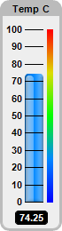
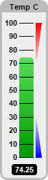
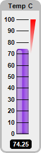
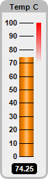
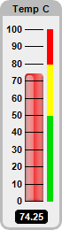
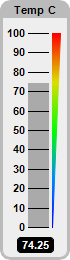

This example demonstrates vertical bar meters in a white coloring scheme, and with bars in various shading styles.
ChartDirector 7.1 (C++ Edition)
White Vertical Bar Meters






Source Code Listing
#include "chartdir.h"
void createChart(int chartIndex, const char *filename)
{
// The value to display on the meter
double value = 74.25;
// Create a LinearMeter object of size 70 x 260 pixels with very light grey (0xeeeeee)
// backgruond and a grey (0xbbbbbb) 3-pixel thick rounded frame
LinearMeter* m = new LinearMeter(70, 260, 0xeeeeee, 0xbbbbbb);
m->setRoundedFrame(Chart::Transparent);
m->setThickFrame(3);
// Set the scale region top-left corner at (28, 33), with size of 20 x 194 pixels. The scale
// labels are located on the left (default - implies vertical meter).
m->setMeter(28, 33, 20, 194);
// Set meter scale from 0 - 100, with a tick every 10 units
m->setScale(0, 100, 10);
// Demostrate different types of color scales
double smoothColorScale[] = {0, 0x0000ff, 25, 0x0088ff, 50, 0x00ff00, 75, 0xdddd00, 100,
0xff0000};
const int smoothColorScale_size = (int)(sizeof(smoothColorScale)/sizeof(*smoothColorScale));
double stepColorScale[] = {0, 0x00dd00, 50, 0xffff00, 80, 0xff0000, 100};
const int stepColorScale_size = (int)(sizeof(stepColorScale)/sizeof(*stepColorScale));
double highColorScale[] = {70, Chart::Transparent, 100, 0xff0000};
const int highColorScale_size = (int)(sizeof(highColorScale)/sizeof(*highColorScale));
double lowColorScale[] = {0, 0x0000ff, 30, Chart::Transparent};
const int lowColorScale_size = (int)(sizeof(lowColorScale)/sizeof(*lowColorScale));
if (chartIndex == 0) {
// Add a blue (0x0088ff) bar from 0 to value with glass effect and 4 pixel rounded corners
m->addBar(0, value, 0x0088ff, Chart::glassEffect(Chart::NormalGlare, Chart::Left), 4);
// Add a 6-pixel thick smooth color scale at x = 53 (right of meter scale)
m->addColorScale(DoubleArray(smoothColorScale, smoothColorScale_size), 53, 6);
} else if (chartIndex == 1) {
// Add a green (0x00cc00) bar from 0 to value with bar lighting effect and 4 pixel rounded
// corners
m->addBar(0, value, 0x00cc00, Chart::barLighting(), 4);
// Add a high only color scale at x = 52 (right of meter scale) with thickness varying from
// 0 to 8
m->addColorScale(DoubleArray(highColorScale, highColorScale_size), 52, 0, 52, 8);
// Add a low only color scale at x = 52 (right of meter scale) with thickness varying from 8
// to 0
m->addColorScale(DoubleArray(lowColorScale, lowColorScale_size), 52, 8, 52, 0);
} else if (chartIndex == 2) {
// Add a purple (0x0088ff) bar from 0 to value with glass effect and 4 pixel rounded corners
m->addBar(0, value, 0x8833dd, Chart::glassEffect(Chart::NormalGlare, Chart::Left), 4);
// Add a high only color scale at x = 52 (right of meter scale) with thickness varying from
// 0 to 8
m->addColorScale(DoubleArray(highColorScale, highColorScale_size), 52, 0, 52, 8);
} else if (chartIndex == 3) {
// Add a orange (0xff8800) bar from 0 to value with cylinder lighting effect
m->addBar(0, value, 0xff8800, Chart::cylinderEffect());
// Add a high only color scale at x = 53 (right of meter scale)
m->addColorScale(DoubleArray(highColorScale, highColorScale_size), 53, 6);
} else if (chartIndex == 4) {
// Add a red (0xee3333) bar from 0 to value with glass effect and 4 pixel rounded corners
m->addBar(0, value, 0xee3333, Chart::glassEffect(Chart::NormalGlare, Chart::Left), 4);
// Add a step color scale at x = 53 (right of meter scale)
m->addColorScale(DoubleArray(stepColorScale, stepColorScale_size), 53, 6);
} else {
// Add a grey (0xaaaaaa) bar from 0 to value
m->addBar(0, value, 0xaaaaaa);
// Add a smooth color scale at x = 52 (right of meter scale) with thickness varying from 0
// to 8
m->addColorScale(DoubleArray(smoothColorScale, smoothColorScale_size), 52, 0, 52, 8);
}
// Add a title using 8pt Arial Bold font with grey (0xbbbbbb) background
m->addTitle("Temp C", "Arial Bold", 8, Chart::TextColor)->setBackground(0xbbbbbb);
// Add a text box at the bottom-center. Display the value using white (0xffffff) 8pt Arial Bold
// font on a black (0x000000) background with rounded border.
TextBox* t = m->addText(m->getWidth() / 2, m->getHeight() - 8, m->formatValue(value, "2"),
"Arial Bold", 8, 0xffffff, Chart::Bottom);
t->setBackground(0x000000);
t->setRoundedCorners(3);
t->setMargin(5, 5, 2, 1);
// Output the chart
m->makeChart(filename);
//free up resources
delete m;
}
int main(int argc, char *argv[])
{
createChart(0, "whitevbarmeter0.png");
createChart(1, "whitevbarmeter1.png");
createChart(2, "whitevbarmeter2.png");
createChart(3, "whitevbarmeter3.png");
createChart(4, "whitevbarmeter4.png");
createChart(5, "whitevbarmeter5.png");
return 0;
}